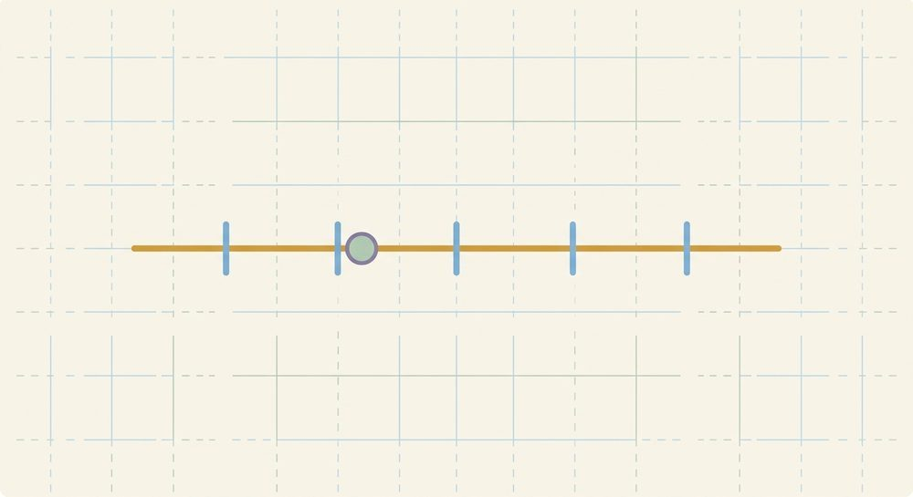

Foundations & the Language of Algebra
Variables, the equals sign as a balance, the number system & number line, order of operations, negative numbers, expressions vs. equations

What you need first: arithmetic only — adding, subtracting, multiplying, and dividing whole numbers, plus basic fractions and decimals. By the end of this unit, you'll be able to:
- Read = as "the same as" (a balance), and judge whether a number sentence is true, false, or open.
- Solve simple one-step equations by inspection and by undoing.
- Name the kinds of numbers (natural, whole, integer, rational, irrational, real) and place them on the number line, and see that decimal and fraction are ways of writing a number — its value, not its spelling, fixes its type.
- Apply order of operations as four tiers (P, E, [MD], [AS]), working left to right within a tier.
- Add, subtract, multiply, and divide negative numbers fluently, with the sign rules.
- Tell an expression from an equation, and evaluate an expression by substitution.
A note before you start, and it holds for the whole book. You don't have to absorb a lesson in one sitting. If a page stops landing, that's a signal to take a break, not a verdict on you. And when you come back to a new lesson, redo two or three problems from a lesson or two earlier from memory first — that small warm-up is one of the most useful things you can do, and you'll see why as the units build.
This first unit is the language the rest of the course speaks. You'll re-read the equals sign so every later move makes sense, map out the kinds of numbers so a strange-looking answer feels normal instead of wrong, get steady with order of operations and with negative numbers, and finally learn to tell apart the two things algebra is mostly made of. None of it needs anything beyond the arithmetic you already do.
Lesson 1.1: Variables and the meaning of equations
You already know how to work with numbers. Algebra adds just one new idea: sometimes a number is hidden, and we use a letter to stand for it until we track it down.
Start with the equals sign, because almost everything ahead leans on reading it the right way. It's tempting to read "=" as "now write the answer." It actually means "the same as": picture a balance scale, with both sides level.
Here's that picture in full. Imagine an old balance scale with two pans. On the left pan you put 8 coins and 4 more; on the right pan, some coins and 5 more. For the scale to rest level, the two pans have to weigh the same. The left pan holds 12, so the right pan also has to come to 12 — which means the unknown pile holds 7. You didn't "compute" anything off to the side; you asked what keeps the two sides equal. That's what the equals sign is really about.
So a sentence with an "=" in it is a claim that two things have the same value. That claim can be true, false, or, when a piece is still hidden, neither yet. Try reading each of these as a balance and saying which it is:
- 7 = 4 + 3. The right pan is 7, the left pan is 7. They match, so it's true — even though the single number sits on the left, which can look "backwards" until you remember = just means same as.
- 8 = 8. Nothing to work out, both pans already weigh 8. Still true.
- 5 + 2 = 9. The left pan is 7, the right is 9. They don't match, so it's false.
- □ + 3 = 5 + 7. The right pan is 12, and the left pan won't balance it until the box holds 9. Until you fill the box, it's neither true nor false — it's open.
That box is where algebra begins. Instead of an empty box we usually write a letter, say x, and call it a variable. A variable isn't shorthand for an object — x doesn't mean "apples." It's a closed box with a number hidden inside that we don't know yet, and every copy of the same letter in one problem holds that same hidden number. So "3 + x = 7" asks the balance question again: what number in the box keeps the two sides equal?
Once you read it that way, there are two honest roads to the answer, and they agree. The first is just to ask the question out loud: what plus 3 is 7? Four. The second works even when the numbers aren't friendly, and it's the move the rest of the course is built on. The 3 is added onto x, so undo it: subtract 3. To keep the scale level you subtract from both pans, and when you take 3 away from x + 3, the +3 goes to zero, leaving x by itself.
$$x + 3 = 7 \;\xrightarrow{\;-3 \text{ from both sides}\;}\; x = 4$$
Now do the one move worth building into a habit today: check it. Put your answer back into the original and see if both sides match. Here x = 4, so the left side is 4 + 3 = 7, which matches the right. So x = 4 is correct.
If a check ever doesn't match, you haven't failed — your check just did its job and caught something before it counted. That's exactly what it's for. Go back to your first step and re-run the arithmetic slowly; a mismatch is almost always one sign or one small slip, not the whole method.
One small thing here comes back as a big thing in Unit 4. The rule "+3" took an input and turned it into an output: feed in 4, out comes 7. An equation pins down the output and asks you for the input. We'll give that input-to-output idea its own name much later; for now just notice it's there.
New words
- 1.1.d1 Variable: a letter that stands in for a number we don't know yet (not a label for an object). Every copy of the same letter in one problem holds the same hidden number.
- 1.1.d2 Equation: a sentence claiming two things have the same value, joined by =.
- 1.1.d3 Open sentence: a number sentence with a blank or variable — neither true nor false until the unknown is filled (e.g. x + 3 = 7).
Read each worked example slowly, a line at a time, and ask why each line follows from the one above before you go on. That's what makes a worked example teach.
Worked example
- 1.1.w1 Fill the blank so it stays true: 8 + 4 = □ + 5. The left pan is 12, so the right pan has to reach 12 too; that means □ + 5 = 12, so the box holds 7. (Filling 9 here is the calculator habit — you computed 8 + 4 and forgot the right pan still has a +5 to balance.)
- 1.1.w2 True, false, or open? 7 = 4 + 3. Both pans weigh 7, so it's true. The lone 7 on the left doesn't make it backwards; = just means the two sides match.
- 1.1.w3 Solve by undoing: x + 3 = 7. The 3 is added on, so subtract 3 from both sides; the +3 goes to zero and x = 4. Check: 4 + 3 = 7, which matches.
- 1.1.w4 Solve by undoing: 2x = 10. Here x is multiplied by 2, so undo with the opposite, division: divide both sides by 2 and x = 5. Check: 2(5) = 10, which matches.
- 1.1.w5 Solve: x/3 = 4. This time x is divided by 3, so undo by multiplying both sides by 3, giving x = 12. Check: 12/3 = 4, which matches.
Notice that the move only ever does the opposite of what was done to x: undo adding with subtracting, undo multiplying with dividing, and always to both sides. That's the same idea each time, even though the numbers and operations change. Even so, x/3 = 6 is not automatically "the same as" x + 5 = 12; if undoing a division still feels new, treat it as new and check your answer.
Try a clean one before the practice mixes things up: solve x − 6 = 0. The 6 is subtracted, so add 6 to both sides; x = 6. Check: 6 − 6 = 0, which matches. Nothing tricky, just the undo move, once.
One more reading habit worth keeping. A letter is "some number we don't know yet," so read 5x as "five of whatever the box holds," never as the digits 5 and x stuck side by side.
Check yourself
- 1.1.c1 Fill the blank so it stays true: 6 + □ = 4 + 5, and put into words how you know. (The right side is 9, so the left side has to reach 9; 6 plus the box must be 9, so the box is 3.)
- 1.1.c2 Is 9 = 9 a real equation? Say why or why not. (Yes — it's a claim that two sides have the same value, and here they plainly do; there's just nothing left to find.)
- 1.1.c3 In x − 2 = 5, which operation do you undo, and why does undoing it tell you x? (The 2 is subtracted from x, so add 2 to both sides; that sends the −2 to zero and leaves x alone, so x = 7.)
You can now read = as a balance, tell a true, false, or open sentence apart, and solve a one-step equation two ways — by inspection and by undoing — and check the answer by putting it back in.
Mixed practice feels harder than repeating one kind of problem, and that's the point — it's what makes a skill last to next week. Every problem below has its answer at the end of the lesson, and if one stalls you, flip back to the worked example it's based on. That's what it's there for.
Practice
Judge true / false / open (write which):
Fill the blank so the sentence stays true:
Solve by inspection or by undoing (show the undo step):
AnswersTry each one yourself first, then open to check.
- true 2. false 3. open (true when the blank is 4) 4. 7 5. 7 6. x=4 7. x=5 8. x=7 9. x=5 10. x=12 11. x=7 12. x=6 13. x=5
Lesson 1.2: The number system & the number line
When you solve 2x = 7 later on, the answer is 3.5. The instinct is to assume you slipped somewhere. You didn't — 3.5 is a real, ordinary number. This lesson lays out the kinds of numbers there are and puts them all on one picture, so an answer like 3.5, or −5, or even √2 arrives looking normal rather than like a mistake.
Think of the kinds of numbers as nested boxes, each one bigger than the last. Start with the counting numbers: 1, 2, 3, and so on, the ones you'd use to count apples. Toss in 0 and you have the whole numbers. Add the negatives, the mirror image on the other side of 0, and you have the integers: …, −2, −1, 0, 1, 2, …, with no fractional part. Allow ratios next, one number divided by another, and you reach the rational numbers. Each box sits inside the next: every counting number is whole, every whole number is an integer, every integer is rational.
The picture that holds all of this is the number line. Draw a straight line, mark 0 in the middle, and space the integers out as even ticks, positives going right and negatives going left. Now the part that matters most: between any two ticks there are infinitely many more numbers. The values 3/4, 2.5, and 0.333… all live in the gaps between the whole-number marks 1.2.f1. Algebra doesn't stay on the ticks; it uses the whole line.
Most points on that line are rational, but not all of them. A few numbers have decimals that run on forever without ever settling into a repeating pattern, so no fraction a/b ever lands exactly on them. Two famous ones are π = 3.14159… and √2 = 1.41421…. These are the irrational numbers. The rationals and the irrationals together, every single point on the line with no gaps, are the real numbers. The "whole line" the picture just promised now has a proper name, and it's the ground algebra stands on.
One more idea quietly causes a lot of trouble. A fraction bar or a decimal point is just how a number is spelled, not what it is. The number 5 can be written 5, or 5/1, or 5.0: three spellings, one point on the line. So you can't tell a number's type from how it's written. Work out its value first, then classify it.
New words
- 1.2.d1 Natural (counting) numbers: 1, 2, 3, …
- 1.2.d2 Whole numbers: the naturals plus 0.
- 1.2.d3 Integers: whole numbers and their negatives — …, -2, -1, 0, 1, 2, … — no fractional part.
- 1.2.d4 Rational numbers: any number that can be written as a ratio of two integers a/b (b ≠ 0). This includes integers (5 = 5/1), terminating decimals (4.8 = 24/5), and repeating decimals (0.333… = 1/3).
- 1.2.d5 Irrational numbers: numbers whose decimal never ends and never repeats, so they cannot be written as a ratio of two integers — for example π = 3.14159… and √2 = 1.41421…. (No radical arithmetic yet; √2 returns in Unit 12. Here, just know it names a real point on the line.)
- 1.2.d6 Real numbers: every number on the number line — the rationals and the irrationals together. Algebra works over the real numbers, so "the whole line" finally has a name.
- 1.2.d7 Decimal: a way of writing a number using a decimal point; the way it's written doesn't change what kind of number it is.
Worked example
- 1.2.w1 Classify 7. It's a counting number, so it's an integer, and 7 = 7/1 makes it rational too. The labels stack — a number can be several types at once.
- 1.2.w2 Classify 4.8. It isn't a whole amount, so it's not an integer; but 4.8 = 24/5, a ratio of two integers, so it's rational, non-integer.
- 1.2.w3 Classify 10/2. Don't be thrown by the fraction bar — work out the value first. 10/2 = 5, so its value is 5, which makes it an integer (and rational). The spelling looked like a fraction; the value is a whole number.
- 1.2.w4 Classify 0.333…. The repeating decimal is exactly 1/3, a ratio of integers, so it's rational, non-integer. Again, the value decides, not the look.
- 1.2.w5 Show three spellings of one number: 5 = 5/1 = 5.0. All three name the same point on the line — a useful reminder that how you write it doesn't change what it is.
- 1.2.w6 Classify √2 and π. Neither can be written as a ratio of integers — their decimals never end and never repeat — so both are irrational (and therefore real, like every point on the line). Compare √9: it looks like a root, but √9 = 3, an integer. Value, not spelling.
A point you can almost feel on the line, before any rule: split one pizza among 6 people instead of 4. Whose slice is smaller? The 6-way slice. That's why 1/6 is less than 1/4, even though 6 is the bigger number on the bottom — more people sharing means smaller pieces. Keep that picture; it keeps fraction sizes honest later.
Check yourself
- 1.2.c1 Name a number that is rational but not an integer, and say how you know it's rational. (One answer: 0.5, because it's 1/2 — a ratio of two integers — and it isn't a whole number.)
- 1.2.c2 Is 12/3 an integer? Make the case from its value, not its appearance. (Work it out: 12/3 = 3, a whole number, so yes — an integer, even though it's written as a fraction.)
- 1.2.c3 Roughly where does −2.5 sit relative to −2 and −3 on the line? (Exactly halfway between them — one half-step to the left of −2, one half-step to the right of −3.)
You can now name the kinds of numbers, see why each sits inside the next, place any of them on the line, and — the part that pays off all course long — decide a number's type from its value instead of its spelling.
Sorting different kinds of number in one set is harder than drilling one kind, and that difficulty is doing real work: it's what makes the skill last. Each answer is at the end of the lesson, and the worked examples above cover every type you'll meet here.
Practice
Classify each number; label all types that apply (integer / rational / irrational / real — note non-integer where it matters). Evaluate first where needed. Every one of these is a real number.
AnswersTry each one yourself first, then open to check.
(all twelve are real numbers; the labels below add the finer type.)
- integer, rational
- integer, rational
- rational, non-integer
- integer, rational
- rational, non-integer
- rational, non-integer
- =5 → integer, rational
- =1/3 → rational, non-integer
- irrational
- irrational
- =4 → integer, rational
- irrational (never repeats)
(For 7, 8, and 11, notice that how a number is written doesn't fix its type — its value does. In 9, 10, and 12 you're meeting the irrationals: real points on the line with no fraction form.)
Lesson 1.3: Order of operations
When two people read 2 + 3 × 4, they need to land on the same value, or nothing in algebra would be reliable. Order of operations is just the shared agreement that makes that happen. And the mistakes here are systematic, not random: they cluster on a few predictable spots, so once you see those spots, they stop catching you.
You've probably met PEMDAS. It's a fine memory hook, but it's misleading in one way: it reads like six ranked steps when it's really four tiers, and two of the tiers are ties. Picture four shelves, top to bottom. The top shelf is grouping — parentheses, square brackets [ ], and, less obviously, the fraction bar. Next shelf down, exponents. Then one shelf shared by multiply and divide as equal partners. Then one shelf shared by add and subtract, also equal partners. You work the top shelf first; within a shared shelf you go left to right.
That "equal partners, left to right" idea is the whole game, so watch it work on the spots that trip people:
- 12 ÷ 2 × 3. Multiply and divide share a shelf, so read left to right: 12 ÷ 2 is 6, then 6 × 3 is 18. (The instinct to do the × first, getting 2, is the trap — there's no "multiply before divide.")
- 8 − 3 + 2. Add and subtract share a shelf too, so left to right again: 8 − 3 is 5, then 5 + 2 is 7. (Not 3, which is what doing the + first would give.)
- 2 × 3². Exponents sit on a higher shelf than multiplying, so square first: 3² is 9, then 2 × 9 is 18. (Not 36, which is multiplying before squaring.)
The top shelf, grouping, can change the answer outright. Compare 2 + 3 × 4 = 14 with (2 + 3) × 4 = 20: same digits, but the parentheses force the addition first. Square brackets [ ] group exactly the way parentheses do. And the fraction bar is a grouping symbol in disguise: in (12 − 2)/(3 + 2) the bar means "finish the whole top and the whole bottom first, then divide," giving 10/5, then 2.
New words
- 1.3.d1 Order of operations: the agreed sequence for evaluating an expression. PEMDAS, but really four tiers: Grouping symbols (parentheses, brackets [ ], and the fraction bar) — the "P" tier, Exponents, [Multiply/Divide] (one tier, left to right), [Add/Subtract] (one tier, left to right). The "P" in PEMDAS is really grouping, not just round parentheses: a fraction bar groups too, meaning "evaluate the whole top and the whole bottom first, then divide."
Worked example
- 1.3.w1 2 + 3 × 4. Multiply is the higher shelf, so do it first: 2 + 12, then add to get 14.
- 1.3.w2 (2 + 3) × 4. Grouping is the top shelf, so the parentheses go first: 5 × 4, then 20.
- 1.3.w3 8 − 3 + 2. Both are on the add/subtract shelf, so left to right: 8 − 3 is 5, then 5 + 2 = 7. Reading left to right is what keeps this from becoming 3.
- 1.3.w4 12 ÷ 2 × 3. Both on the multiply/divide shelf, so left to right: 12 ÷ 2 is 6, then 6 × 3 = 18. Not 2.
- 1.3.w5 2 + 3² × 2. Exponent first (top of what's here): 2 + 9 × 2; then the multiply shelf: 2 + 18; then add to get 20.
- 1.3.w6 10 − 2 × (3 + 1). Grouping first: 10 − 2 × 4; then multiply: 10 − 8; then subtract to get 2.
- 1.3.w7 (12 − 2)/(3 + 2). The fraction bar groups, so finish top and bottom before dividing: 10/5, then 2. The bar quietly says "do the whole numerator and the whole denominator first."
One clean case to settle the shelves in your hands: 18 ÷ 3 + 3. The multiply/divide shelf outranks adding, so divide first: 18 ÷ 3 is 6, then 6 + 3 = 9. One higher-shelf step, then the addition.
When two operations sit on the same shelf, the only question to ask is: reading left to right, which comes first? That single question handles every same-shelf case.
Check yourself
- 1.3.c1 Without computing all the way — in 20 ÷ 4 × 2, which operation happens first, and why? (The ÷, because divide and multiply share a shelf and ÷ is further left; so 20 ÷ 4 is 5, then 5 × 2 = 10.)
- 1.3.c2 Why does 2 × 3² come out to 18, not 36? (The exponent is on a higher shelf than the multiply, so 3² = 9 happens first, then 2 × 9 = 18; multiplying first would be using the wrong shelf order.)
- 1.3.c3 Put parentheses into 2 + 3 × 4 to make it equal 20. (Group the addition: (2 + 3) × 4 = 5 × 4 = 20.)
You can now read an expression as four tiers instead of six steps, handle multiply/divide and add/subtract as left-to-right ties, and treat parentheses, brackets, and the fraction bar as the grouping that goes first.
A set that jumps between tiers asks more of you than a row of look-alikes, and that extra effort is the part that sticks. Every answer is at the end of the lesson, and any one of these maps back to a worked example above if it stalls you.
Practice
AnswersTry each one yourself first, then open to check.
- 11 2. 21 3. 7 4. 10 5. 19 6. 18 7. 16 8. 9 9. 6 10. 3 11. 9 12. 26
(In 3, 4, and 10, watch the left-to-right rule within a tier; in 6, square before you multiply; 12 pulls all four tiers together.)
Lesson 1.4: Negative numbers
Negatives turn up in almost every answer from here on. Getting comfortable with them now means a later problem adds only one new wrinkle at a time, instead of two at once. The friendliest way in is to think of a negative as a debt: −5 means you owe $5.
Start with which negative is bigger, because that's where the eye gets fooled. Would you rather owe $5 or owe $2? Owing less leaves you better off, so −2 is the bigger number and −5 is the smaller one, even though 5 is bigger than 2. On the number line it's the same story: the bigger the debt, the farther left you sit, and farther left means smaller. There are really two separate facts about −5 here, and keeping them apart is what makes negatives stop feeling backwards. One is its value (−5, which can be negative). The other is its distance from 0: how far it sits from 0, ignoring direction, which is 5, and a distance is never negative. So −5 is farther from 0 than −2 (distance 5 beats distance 2), and at the same time −5 is the smaller value. That distance has a name, absolute value, written |−5| = 5.
Adding is a walk along the line. Adding a positive steps you right; adding a negative steps you left. To work out −3 + (−5), stand on −3 and take 5 steps left, landing on −8. The debt view agrees: owe $3, then owe $5 more, and you owe $8.
Subtracting has one move that catches almost everyone, so slow down for it. The plain cases first: subtracting is the same as adding the opposite, so 5 − 8 is 5 + (−8) = −3 (stand on 5, walk 8 left). Now the surprising one. Subtracting a negative looks like it should make a number smaller, so 3 − (−4) pulls you toward −1 or so. But taking away a debt makes you richer: wipe out a $4 debt and you're $4 better off, so 3 − (−4) climbs to 3 + 4 = 7. Subtracting a negative adds. Read the two signs separately as you go: the first is the operation (subtract), the second is the number's sign (a negative four), and the move stops being slippery.
Multiplying and dividing come down to counting signs. Same signs give a positive; different signs give a negative. So (−6)(3) = −18 and (−6)(−3) = 18; −20 ÷ 4 = −5 and −20 ÷ (−5) = 4. For a longer chain, just count the negative factors: an even count comes out positive, an odd count negative.
New words
- 1.4.d1 Opposite (additive inverse): the same distance from 0 on the other side; the opposite of 5 is -5. Subtracting a number is the same as adding its opposite.
- 1.4.d2 Absolute value |a|: how far a is from 0 on the number line — a distance, so it is never negative. |5| = 5 and |-5| = 5 (both sit 5 units from 0); |0| = 0. Opposite and absolute value pair up: opposites share the same absolute value (|5| = |-5|) but have opposite signs.
- 1.4.d3 Sign rules (×, ÷): same signs → positive; different signs → negative. In a product, an even number of negative factors → positive; an odd number → negative.
Worked example
- 1.4.w1 −3 + (−5) = −8. Two debts pile up; or stand on −3 and step 5 to the left.
- 1.4.w2 4 + (−9) = −5. Adding a negative steps left: start at 4, walk 9 left.
- 1.4.w3 5 − 8 = 5 + (−8) = −3. Subtracting is adding the opposite, so this is a step 8 to the left of 5.
- 1.4.w4 3 − (−4) = 3 + 4 = 7. Subtracting a negative adds — wiping out a $4 debt leaves you $4 richer. This is the one to slow down on.
- 1.4.w5 (−6)(3) = −18. Different signs, so the product is negative.
- 1.4.w6 (−6)(−3) = 18. Same signs, so the product is positive.
- 1.4.w7 −20 ÷ 4 = −5. Different signs, so the quotient is negative.
- 1.4.w8 −20 ÷ (−5) = 4. Same signs, so the quotient is positive.
- 1.4.w9 |5| = 5, |−5| = 5, |0| = 0. Each is a distance from 0, so none can be negative.
- 1.4.w10 Which is farther from 0, −8 or 3? Compare distances: |−8| = 8 and |3| = 3, so −8 is farther — even though −8 is the smaller value. Distance and value are two different questions.
Before the set mixes things up, reset on a clean one: −10 + 10. Start on −10 and step 10 to the right, landing exactly on 0. A debt of $10 paid off by $10 leaves you even.
A note on a rule you may have heard: "two negatives make a positive." That one belongs to multiplying, not adding. Owing $3 and then owing $5 more leaves you owing $8, so −3 + (−5) = −8, not +8. When you see two negatives, check which operation you're actually doing before you reach for that rule.
Check yourself
- 1.4.c1 Which is greater, −7 or −3? Explain with the number line or with debt. (−3 — owing $3 is better off than owing $7, and −3 sits to the right of −7 on the line.)
- 1.4.c2 Rewrite 6 − (−2) as an addition, then evaluate it. (6 − (−2) = 6 + 2 = 8 — subtracting a negative adds.)
- 1.4.c3 (−2)(−2)(−2): is the result positive or negative before you multiply, and how do you know? (Three negative factors, an odd count, so it's negative, which the arithmetic confirms: −8.)
You can now order negatives by thinking in debt, add and subtract by walking the line, turn subtracting-a-negative into adding, multiply and divide by counting signs, and read absolute value as a distance that's never negative.
When a set switches between adding, subtracting, multiplying, and dividing signs, you have to pick the right move each time instead of repeating one, which is harder now and is exactly what carries the skill into next week. Each answer is at the end of the lesson, and the worked examples above cover every move in the set, including the subtract-a-negative one.
Practice
Add / subtract:
- 1.4.1 -4 + (-7)
- 1.4.2 6 + (-10)
- 1.4.3 -3 + 8
- 1.4.4 5 - 9
- 1.4.5 -2 - 6
- 1.4.6 4 - (-3)
- 1.4.7 -7 - (-2)
- 1.4.8 -10 + 10
Multiply / divide:
- 1.4.9 (-5)(4)
- 1.4.10 (-6)(-2)
- 1.4.11 (3)(-7)
- 1.4.12 -24 ÷ 6
- 1.4.13 -18 ÷ (-3)
- 1.4.14 15 ÷ (-5)
- 1.4.15 (-2)(-2)(-2)
- 1.4.16 (-1)(-1)(-1)(-1)
Absolute value (distance from 0):
AnswersTry each one yourself first, then open to check.
- -11 2. -4 3. 5 4. -4 5. -8 6. 7 7. -5 8. 0 9. -20 10. 12 11. -21 12. -4 13. 6 14. -3 15. -8 16. 1 17. 7 18. 3 19. 0 20. 10
(In 6 and 7 you're subtracting a negative; 15 and 16 are chains of negatives, so track each sign; for 17–20, read absolute value as distance from 0 — always ≥ 0.)
Lesson 1.5: Expressions vs. equations; evaluating expressions
Algebra has two main characters, and a lot of early confusion comes from mixing them up. One is an expression, a phrase that names a value, like 3x + 2. The other is an equation, a full sentence making a claim, like 3x + 2 = 14. You evaluate an expression; you solve an equation. Trying to "solve" an expression, or "evaluate" an equation, is like trying to answer a noun, and it derails what comes next.
To tell them apart, look for an equals sign. An expression is a noun phrase, like "three more than twice a number," with no verb and no =. An equation is a full sentence, with the = acting as the verb that claims a balance. No equals sign, it's an expression; equals sign present, it's an equation.
Evaluating an expression is where the mystery box pays off. Picture 3x + 2 as a row of seats reserved for a guest who hasn't arrived; x is the empty chair. "Evaluate at x = 4" is the guest sitting down: every x becomes a 4. So 3x + 2 at x = 4 is 3(4) + 2. Now just follow order of operations from Lesson 1.3: 3(4) is 12, then 12 + 2 is 14. Write the steps out, 3(4) + 2 = 12 + 2 = 14, rather than jumping straight to 14, because the careful-substitution habit is what keeps signs and order from slipping.
And signs will show up, so here's one with a negative. Evaluate 5 − 2x at x = −1. Drop −1 into the seat, keeping it in parentheses so the signs stay visible: 5 − 2(−1). That's 5 − (−2), and subtracting a negative adds (straight from Lesson 1.4), so 5 + 2 = 7. The parentheses around the −1 are what save you here; without them it's easy to lose a sign.
One last thing to notice, not yet to formalize: structure matters. 2(x + 3) is not the same as 2x + 3, because the 2 multiplies everything inside the parentheses, not just the x. You can see it with a number — at x = 3, 2(3 + 3) = 12 but 2(3) + 3 = 9. We'll make that into a proper rule in Unit 2; for now, just respect the parentheses.
The input-to-output idea from Lesson 1.1 is hiding here too. Evaluating 3x + 2 at different values is feeding inputs through a machine: in goes 4, out comes 14. When we name that machine in Unit 4, we'll write it f(x) = 3x + 2 and read f(4) = 14.
New words
- 1.5.d1 Expression: a mathematical phrase with no equals sign — e.g. 3x + 2. It names a value once you know the variable; you evaluate it.
- 1.5.d2 Equation: a full sentence with an = — e.g. 3x + 2 = 14. It claims two things are equal; you solve it.
- 1.5.d3 Evaluate / substitute: replace the variable with a given number and compute (the reserved seat finally has its guest sit down).
Worked example
- 1.5.w1 Expression or equation? 3x + 2. No equals sign, so it's an expression — a phrase that names a value once you know x.
- 1.5.w2 Expression or equation? 3x + 2 = 14. It has an =, so it's an equation — a sentence claiming the two sides match.
- 1.5.w3 Evaluate 3x + 2 at x = 4. The seat holds 4, so 3(4) + 2 = 12 + 2 = 14. Each step written out, no jumping.
- 1.5.w4 Evaluate 5 − 2x at x = −1. Keep the −1 in parentheses: 5 − 2(−1) = 5 + 2 = 7. Subtracting a negative adds — watch that sign.
- 1.5.w5 Structure check: evaluate 2(x + 3) and 2x + 3 at x = 3. The first is 2(3 + 3) = 2(6) = 12; the second is 2(3) + 3 = 9. Different values, so they're different expressions — the parentheses change the meaning.
For one that just lets the method click, evaluate 2x + 1 at x = 5. The seat holds 5, so 2(5) + 1 = 10 + 1 = 11. Substitute, then compute in order, nothing more.
There's nothing to "solve" in an expression — only a value to find once you know the variable. And whenever you substitute a negative, wrap it in parentheses (5 − 2(−1), never 5 − 2−1); that one habit prevents most dropped-sign slips.
Check yourself
- 1.5.c1 Is 7y an expression or an equation? How do you know, and what would you do with it? (An expression — no equals sign — so you'd evaluate it once you know y, not solve it.)
- 1.5.c2 Evaluate 4x − 1 at x = 2, then at x = −2. What changed? (At x = 2: 4(2) − 1 = 7. At x = −2: 4(−2) − 1 = −8 − 1 = −9. Switching the input's sign flipped the first term from +8 to −8.)
- 1.5.c3 Does 2(x + 3) equal 2x + 3? Test it with x = 5. (No: 2(5 + 3) = 16 but 2(5) + 3 = 13, so they're different — the 2 has to reach the 3 inside as well.)
You can now tell an expression from an equation by spotting the equals sign, evaluate an expression by substituting and then computing in order, keep negatives safe inside parentheses, and see why the placement of a minus sign changes −2² and (−2)².
Deciding for each one whether to identify it or evaluate it is the work a page of all-the-same never asks for, and it's the part that holds. Each answer is at the end of the lesson, and the worked examples above cover identifying and evaluating, including the signed case.
Practice
Identify each as an expression or an equation:
Evaluate each expression at the given value:
AnswersTry each one yourself first, then open to check.
- expression 2. equation 3. expression 4. equation
- 14 6. 7 7. 11 8. -8 9. -13 10. 4 11. 5 12. 12
(Problems 11 and 12 are the ones to slow down on: 11 is a negative under an exponent — (−2)² = 4, not −4 — and 12 shows 2(x + 3) is not 2x + 3.)
Negatives meet order of operations: now that negatives from Lesson 1.4 are in hand, mix them back into the order of operations from Lesson 1.3. This is a common slip in early algebra, so it's worth a careful look. Watch the two cases side by side.
Without parentheses, −2² means −(2²): the exponent binds only to the 2, and the leading minus is applied after squaring, so −2² = −(4) = −4. With parentheses, the whole −2 is squared: (−2)² = (−2)(−2) = 4. Say it as "no parentheses, square first, then take the opposite." Read aloud, the first is "the negative of two squared," the second is "the quantity negative two, squared."
Evaluate (mind the sign and the exponent's reach):
- −2²
- (−2)²
- −3²
- −2² + 1
- 10 − 2·(−3)
- 8 + (−4)/2
AnswersTry each one yourself first, then open to check.
- -4 14. 4 15. -9 16. -3 17. 16 18. 6
(In 13 vs 14 the only change is the parentheses, and it flips the sign of the answer; 17 and 18 drop a negative into the multiply/divide step. If you land on −2² = 4, you squared before applying the minus — come back to "the exponent only touches the 2.")